This page contains books, courses, tutorials, interactive learning tools and communities of practice that may be of use to people wanting to build their skills in healthcare analytics, modelling and data science.
Looking for code packages, projects or tools? Head to the Packages, Projects and Tools page.
Want to suggest an addition to this page? Head to our contributor guide to find out more - coding entirely optional.
Please note that inclusion of a resource on this site does not imply that the HSMA team, NIHR, or any other Atlas contributors, have reviewed these resources in detail. This resource is designed to act as a signpost to the work that is out there, but you should always conduct your own reviews of the suitability of any of these resources for your own use case.
Inclusion of a resource on this page also does not indicate endorsement of the resource author of the HSMA programme, NIHR, the Atlas, or the description written of the resource.
If you have any concerns, or would like any content to be removed, please raise an issue on the repository.
indicates a resource has been written by a team in the NHS, Public Health England, or a similar organisation
indicates a resource has been written by academics, though often they will be working in partnership with NHS organisations in some manner
indicates a resource is not free to access
Books
Books and eBooks covering analytics, modelling and data science techniques. Most are free to read online; paid books are listed separately at the end of this section.
Healthcare-specific
Books written for, or built around examples from, health and care settings.
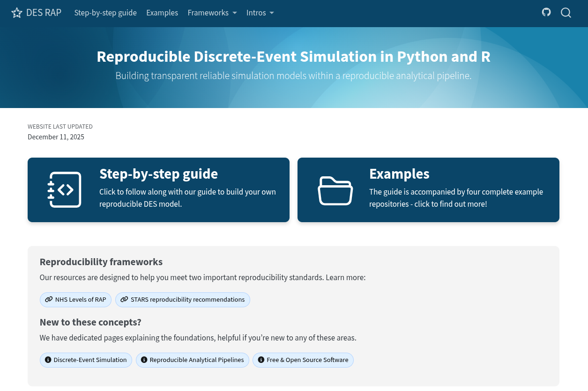
DES RAP Book is an open resource and website for building discrete-event simulation (DES) models within a reproducible analytical pipeline (RAP), supporting the healthcare simulation community. DES models are often used for building simulations of pathways and services, allowing 'what-if' questions to be tested. The resource demonstrates practical, code-based workflows and tools to help researchers and practitioners develop, validate, and share DES models in Python (SimPy) and R (simmer), ensuring models are reproducible.
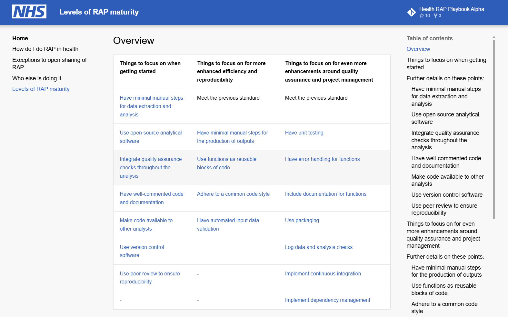
The Health RAP Playbook, maintained by NHS England, documents the processes, tools and technologies used in health and care when creating Reproducible Analytical Pipelines (RAP). It complements existing UK Government and NHS RAP guidance, and is aimed at analysts, analytical leaders, IT, cyber and information governance professionals, and members of the public.
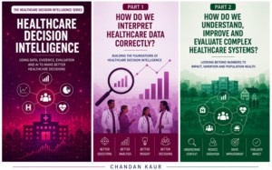
Healthcare Decision Intelligence is a free eBook series helping analysts, clinicians, managers and decision-makers to interpret, question and use healthcare data responsibly. Grounded in realistic NHS scenarios, its modules cover topics such as rates, variation, fair comparison, reading dashboards, evaluation, uncertainty, demand and capacity, data quality, health economics and population health management, each with questions decision-makers should ask. It is accompanied by an interactive companion app that recommends what to read next.
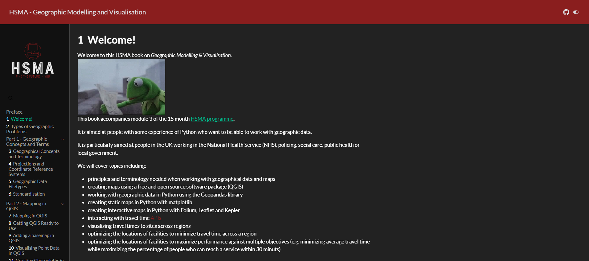
HSMA: Geographic Modelling and Visualisation is a free eBook written to accompany the geographic module of the Health Service Modelling Associates (HSMA) programme. It covers key geographic concepts, making maps in the free point-and-click tool QGIS and in Python, working with travel times, solving facility location problems such as where to place services, and redrawing boundaries.
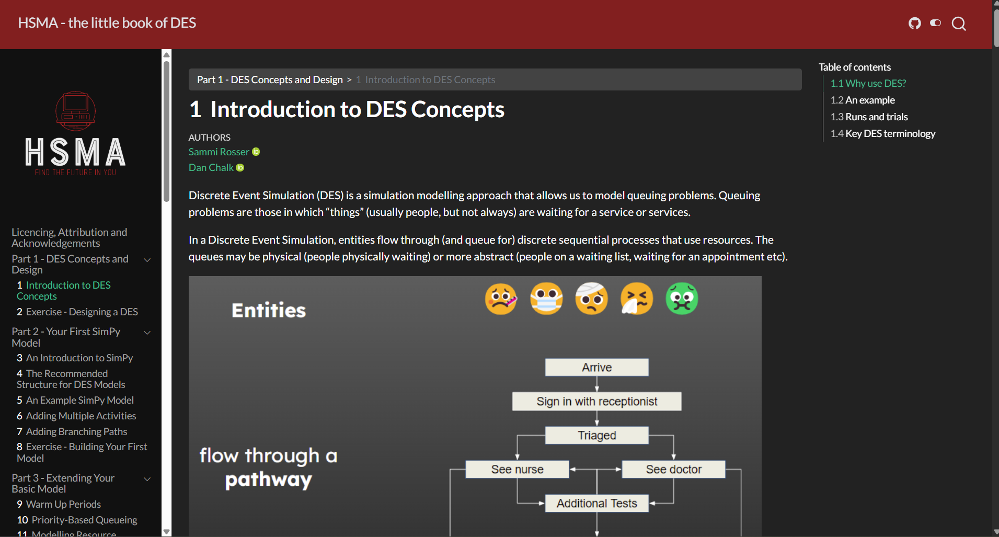
The Little Book of Discrete Event Simulation (DES) is a free eBook written to accompany the DES module of the Health Service Modelling Associates (HSMA) programme. DES is a technique used for building simulations of pathways and services, allowing 'what-if' questions to be tested. The book takes you from being a complete beginner in DES through to creating complex models with a web interface. This Python resource primarily focusses on the SimPy package, also touching on Streamlit and various supporting packages.
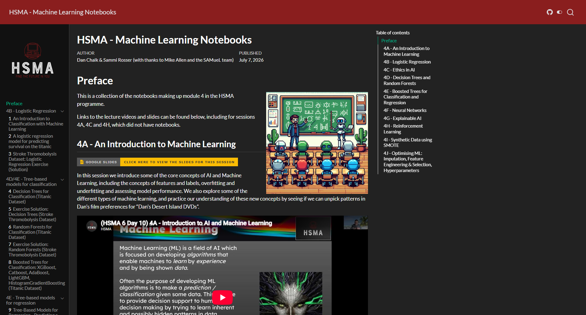
HSMA: Machine Learning Notebooks is a free online collection of the guided code examples from the machine learning module of the Health Service Modelling Associates (HSMA) programme. It covers logistic regression, tree-based models, neural networks, explainable AI, synthetic data and model optimisation in Python, with links to the lecture videos and slides for each session.
General open analytics
Open books on analytics, modelling and data science that are not specific to healthcare, but are useful for healthcare analysts.
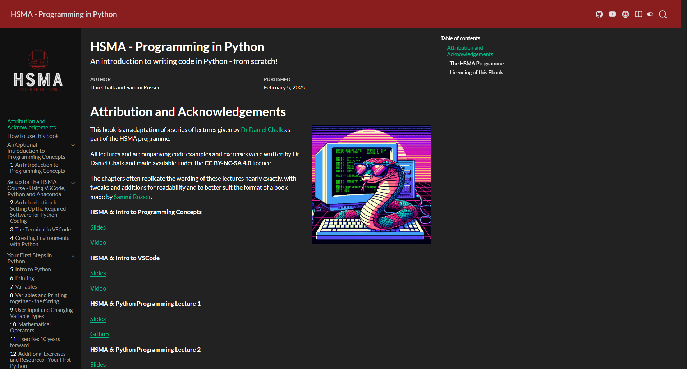
HSMA: Programming in Python is a free eBook that teaches Python from scratch, written to accompany the introductory module of the Health Service Modelling Associates (HSMA) programme. It covers data types, lists, dictionaries, loops, conditional logic, functions, packages, error handling and object oriented programming, plus an introduction to numpy, pandas and creating graphs.
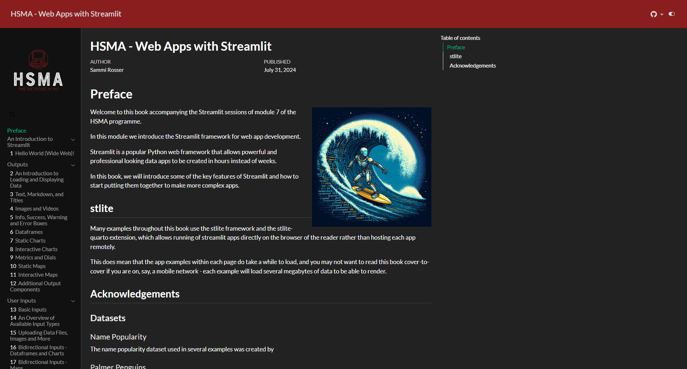
HSMA: Web Apps with Streamlit is a free eBook written to accompany the Streamlit sessions of the Health Service Modelling Associates (HSMA) programme. It takes you from your first Streamlit app through to deploying it on a free hosting service, and acts as a reference guide for techniques such as multi-page apps, download buttons, partial reruns, custom styling, caching, session state and stlite.
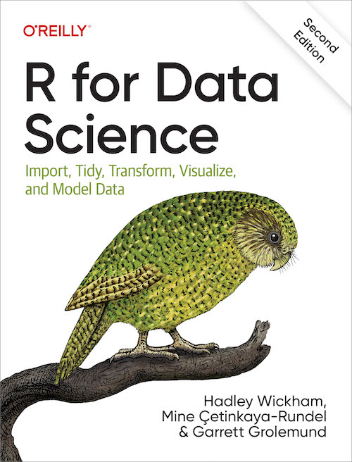
R for Data Science is a free online book that teaches how to do data science with R, from importing and tidying data through to transforming, visualising and communicating it. It is built around the tidyverse collection of packages, including ggplot2, dplyr and tidyr, and Quarto for reporting.
Paid books
Books that must be bought or accessed through a paid subscription. These are marked with .
A paid book from Wiley on data visualisation best practice for health and healthcare professionals. It covers health and healthcare data, visual perception research, gathering requirements, building teams, and designing tables, graphs, dashboards and reports for health data.
Training
Courses
Structured courses and modules, often including recorded sessions, slides and exercises.
Each course is tagged as synchronous (live), meaning it is taught live at set times, or asynchronous (self-paced), meaning its materials can be worked through at any time. Some courses are both. You can also filter by the Synchronous and Asynchronous categories.
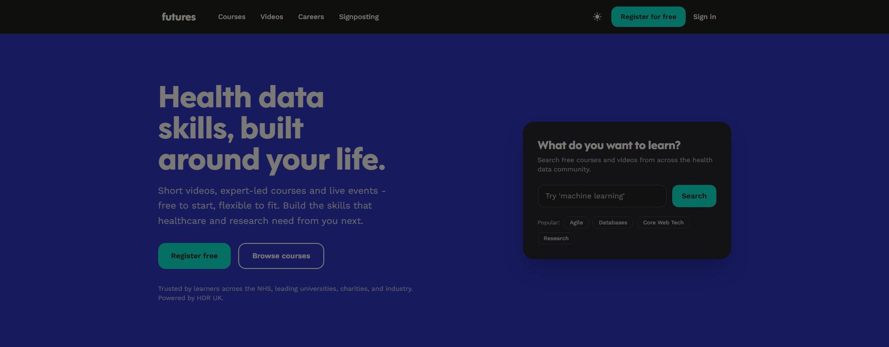
Futures is a free online learning platform from Health Data Research UK (HDR UK), with self-paced expert-led courses, over 100 short videos and live events on health data science. Courses cover topics such as accessing health data, databases and research software engineering. Courses are free, but some modules charge for a certificate.
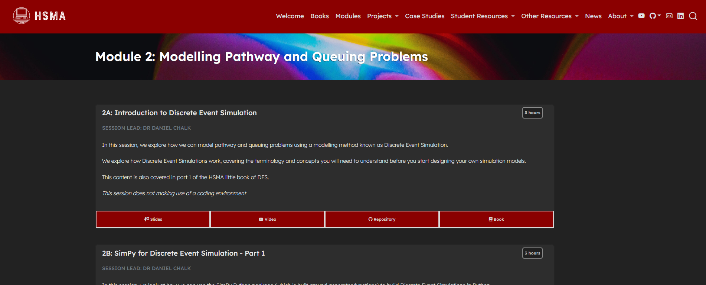
This is a collection of slides, session recordings, code examples, exercises, exercise solutions and solution videos from the discrete event simulation (DES) module of the Health Service Modelling Associates Programme, covering 9 hours of content. It teaches discrete event simulation with the Python SimPy package, assuming no prior knowledge of the package or DES concepts. DES is helpful for building simulations of pathways and services, allowing 'what-if' questions to be tested.
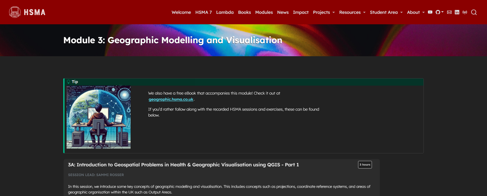
This is a collection of slides, session recordings, code examples and exercises from the geographic modelling and visualisation module of the Health Service Modelling Associates Programme, covering 12 hours of content. It teaches how to make maps in the free point-and-click tool QGIS and in Python with geopandas and folium, how to obtain and use travel time data, and how to solve location optimisation problems such as where to site services.
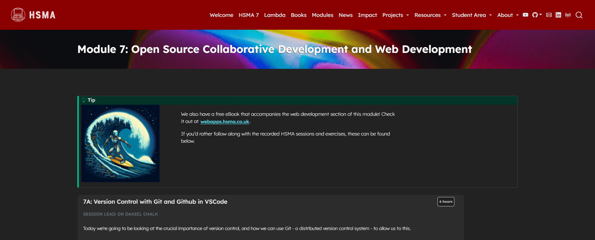
This is a collection of slides, session recordings, code examples and exercises from the open source collaborative development and web development module of the Health Service Modelling Associates Programme, covering 18 hours of content. It teaches version control with Git and GitHub, and how to build and deploy interactive web apps in Python with Streamlit.
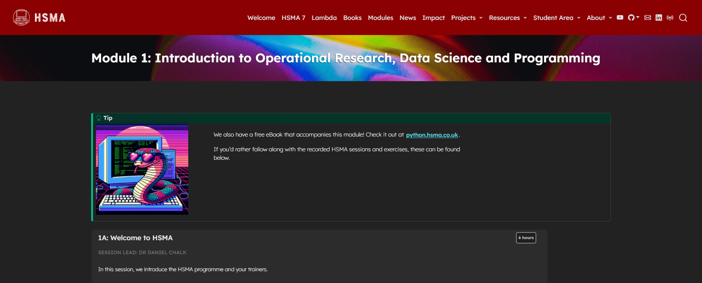
This is a collection of slides, session recordings, code examples and exercises from the introductory module of the Health Service Modelling Associates Programme, covering 36 hours of content. It introduces the fields of operational research and data science, and teaches Python programming from scratch, assuming no prior programming experience.
HSMA-λ is a series of standalone, code-free online workshops from the HSMA team for decision makers in the health service. Each three-hour workshop covers one technique taught on the HSMA programme - simulation, location optimisation or machine learning - so that participants can ask the right questions and interpret project outputs. It is free to people working in public sector healthcare organisations.
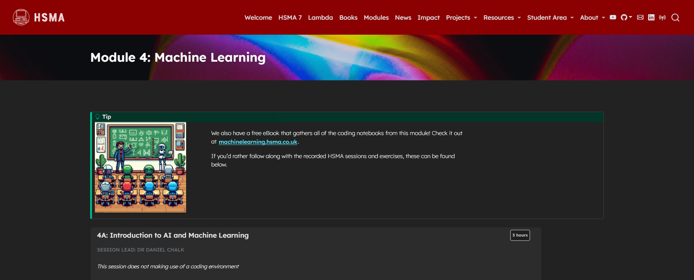
This is a collection of slides, session recordings, code examples and exercises from the machine learning module of the Health Service Modelling Associates Programme, covering 30 hours of content. It teaches classification and regression with scikit-learn and tensorflow, including machine learning ethics, assessing model performance, explainable AI, model optimisation, reinforcement learning and synthetic data.
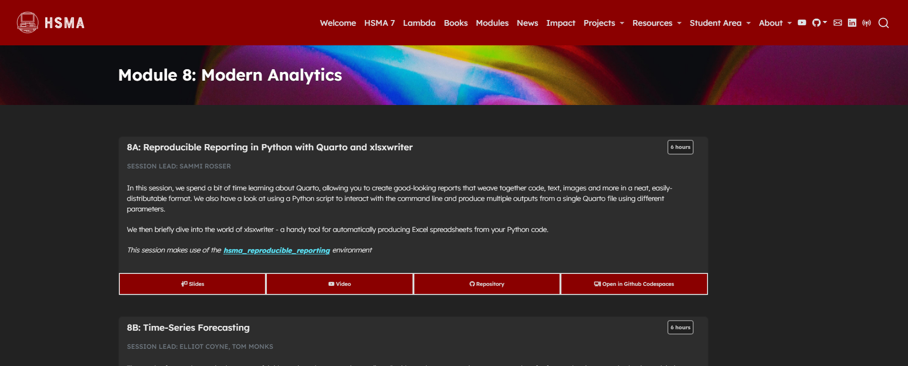
This is a collection of slides, session recordings, code examples and exercises from the modern analytics module of the Health Service Modelling Associates Programme, covering 12 hours of content. It teaches reproducible, parameterised reporting with Quarto and xlsxwriter, and time-series forecasting in Python, including the Prophet library.
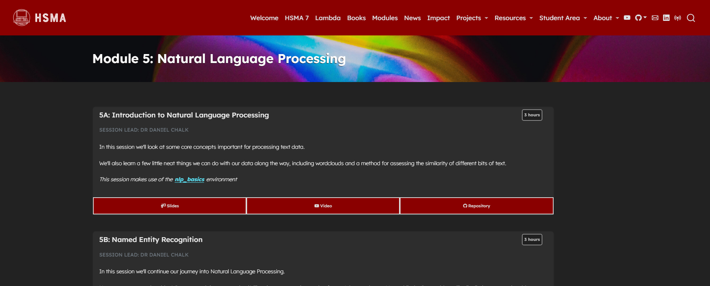
This is a collection of slides, session recordings, code examples and exercises from the natural language processing (NLP) module of the Health Service Modelling Associates Programme, covering 15 hours of content. It teaches how to make sense of unstructured text data in Python, covering word frequencies and wordclouds, named entity recognition, and sentiment analysis with neural networks.
The Health Service Modelling Associates (HSMA) Programme is a 15-month online training and mentorship course teaching public sector analysts, clinicians and managers to use data science and operational research techniques in Python, and supporting them to apply these in their organisations. It is free for people working in health, social care and policing in England, and all recordings, materials and code are freely available to anyone.
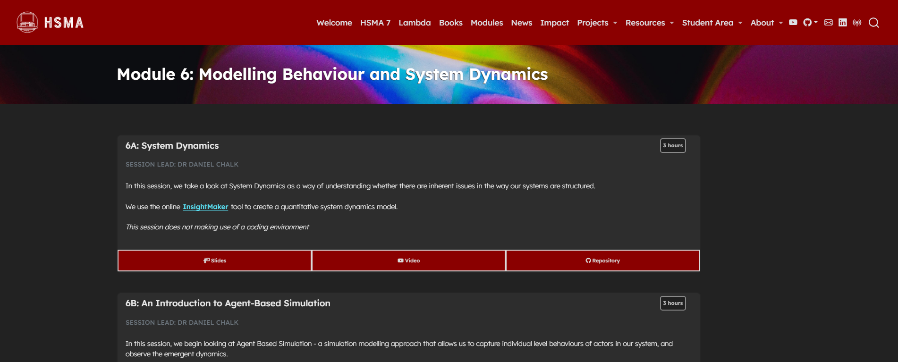
This is a collection of slides, session recordings, code examples and exercises from the system dynamics and agent-based simulation module of the Health Service Modelling Associates Programme, covering 12 hours of content. It introduces system dynamics using the codeless InsightMaker platform, and agent-based simulation in Python using the MESA package.

A YouTube playlist of recorded hands-on workshops from the NHS-OA Community and its predecessor, the NHS-R Community. The workshops are mostly in R, from introductory and intermediate R courses through to topics such as data visualisation, Shiny, regression modelling, tidymodels, statistical process control and working with databases.
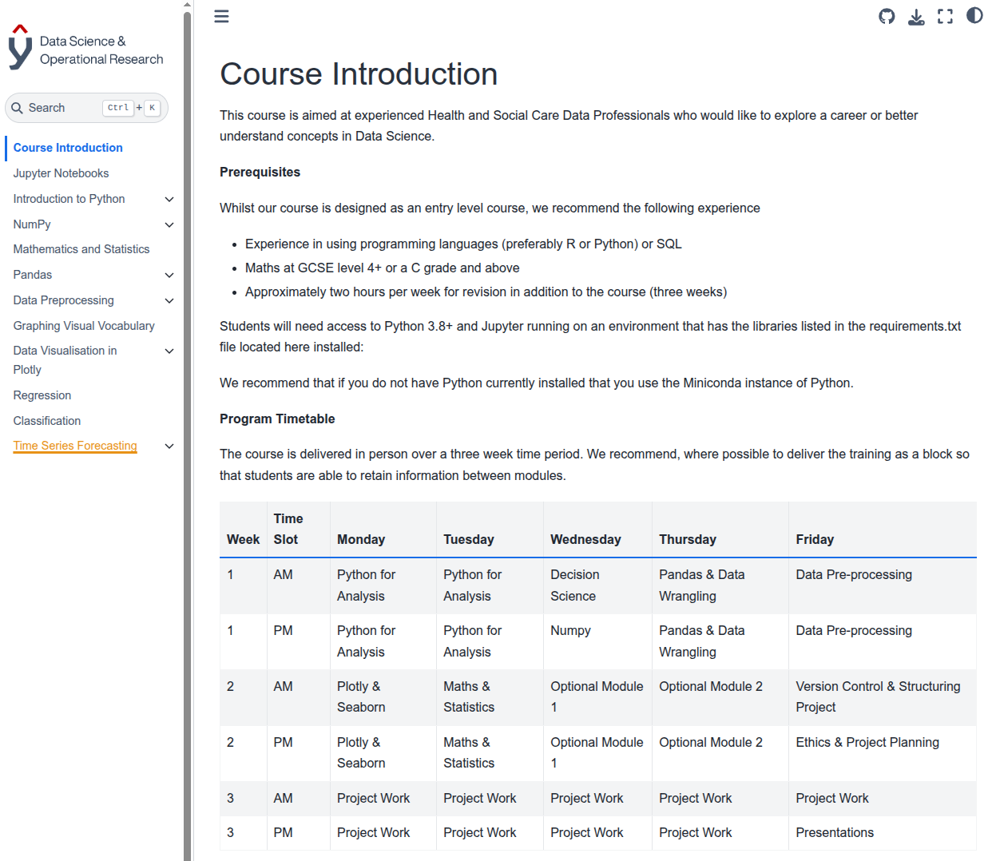
Data science course aimed at experienced Health and Social Care Data Professionals.
Interactive tools
Interactive apps and tools to help you explore and learn concepts hands-on.
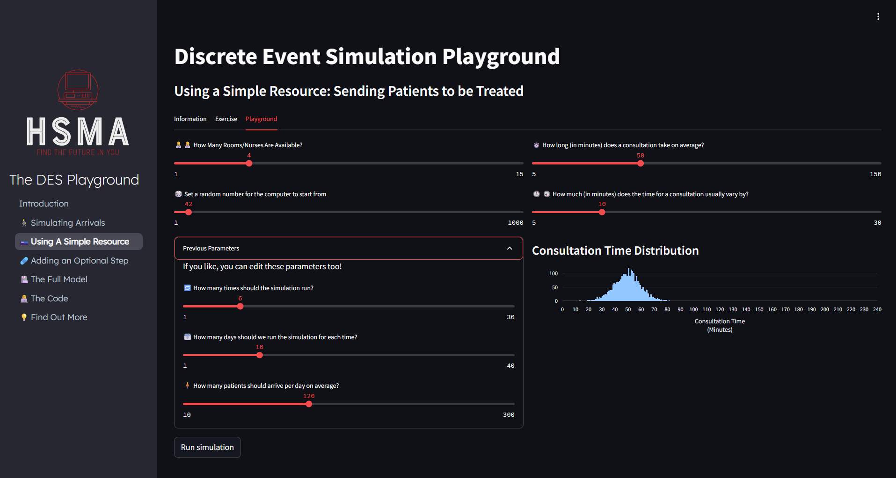
The Discrete Event Simulation (DES) playground is an interactive web application designed to teach the fundamental concepts of DES to absolute beginners. Used to support a range of training sessions, it can also be used as a standalone tool to introduce yourself to why DES is useful, building up from a very simple to a more complex model and allowing you to explore the impact of changing a range of parameters. DES is used for building simulations of pathways and services, allowing 'what-if' questions to be tested.
Reference sites
Websites with code snippets, guides and reference material to dip into as needed.
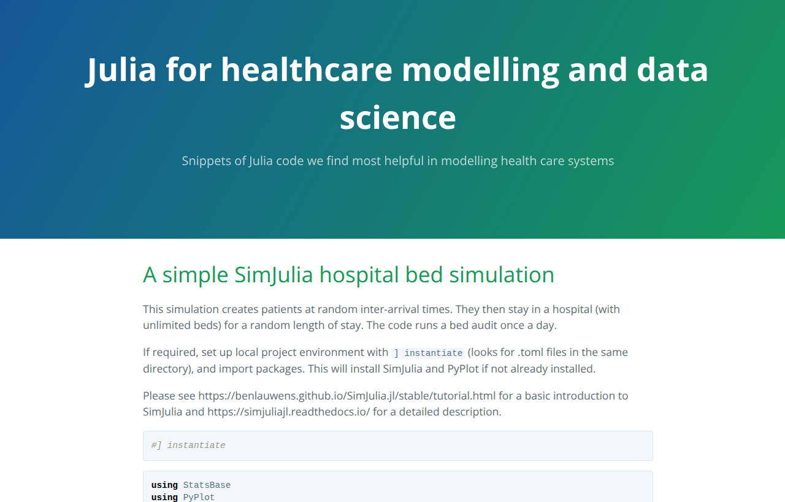
Website with snippets of Julia code helpful for modelling health care systems.
Recorded webinars and conference talks
Recordings of one-off webinars and conference talks, covering a wide range of topics and real-world projects.
To search the individual recordings from all of these collections at once, use the Recordings Finder.

Recordings of the fortnightly online Huddles of the Midlands Analyst Network, hosted by the Strategy Unit, which relaunched as the National Analyst Network in 2026. Each hour-long Huddle features a presenter from health and care, academia or beyond, on topics ranging from health inequalities, waiting lists and demand modelling to data visualisation, RAP and the analyst profession.

Recordings of project presentations from the showcases of the Health Service Modelling Associates (HSMA) programme, where participants present the modelling and data science projects they have carried out in their own health, social care and policing organisations. Projects use techniques such as discrete event simulation, machine learning, natural language processing, forecasting and geographic modelling.
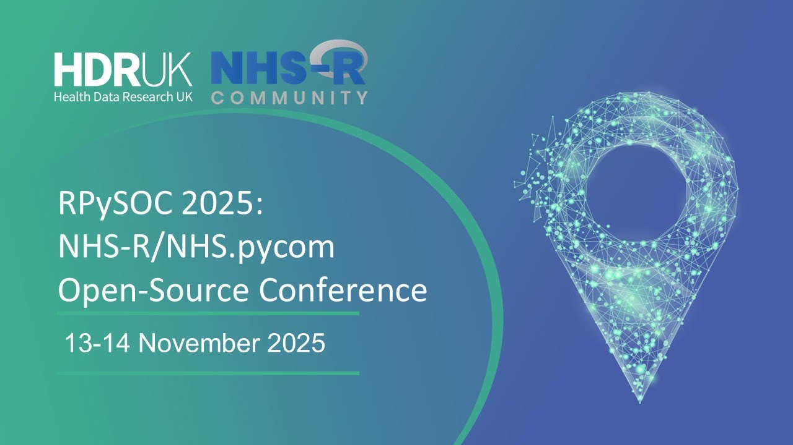
YouTube recordings of talks from the NHS-OA Community's annual conference, formerly the NHS-R Community Conference and now RPySOC, the NHS-R/NHS.pycom open source conference, including the Python track run by the NHS Python Community (NHS.pycom). Talks from analysts and data scientists across health and care showcase real-world projects using R, Python and other open source tools, from simulation and waiting list modelling to data visualisation and reproducible analytical pipelines.

A YouTube playlist of recorded webinars from the NHS-OA Community and its predecessor, the NHS-R Community. Mostly focused on R, the webinars cover tools and techniques such as Shiny, Quarto, Git, package development, testing and reproducible environments, alongside real-world NHS case studies in forecasting, statistical modelling and service planning.
Recordings of talks and events from the NHS Python Community (NHS.pycom), now part of the NHS-OA Community. They include show-and-tell sessions on using Python in clinical and operational settings, introductions to Python and machine learning, software engineering for data scientists, and talks on reproducible analytical pipelines.
Communities
Professional networks and communities of practice where healthcare analysts can connect, share their work and learn from each other.
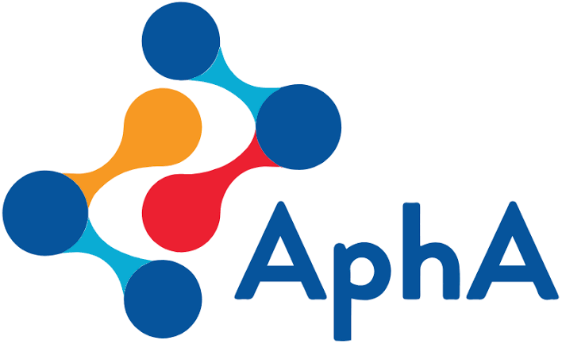
AphA is the professional membership body for health and care data and analytics professionals in the UK. It aims to raise the profile of analysts and provide a professional support network, offering professional accreditation, mentoring, networking events, an annual conference, discounted training and course accreditation, delivered through regional branches and specialist networks.
The NHS-OA Community is a community of practice for data analysis and data science using open source software in the NHS and the wider UK health and care system. It runs workshops, webinars, Coffee and Coding sessions, RAP drop-ins, and conferences, and shares blog posts, training materials and books.
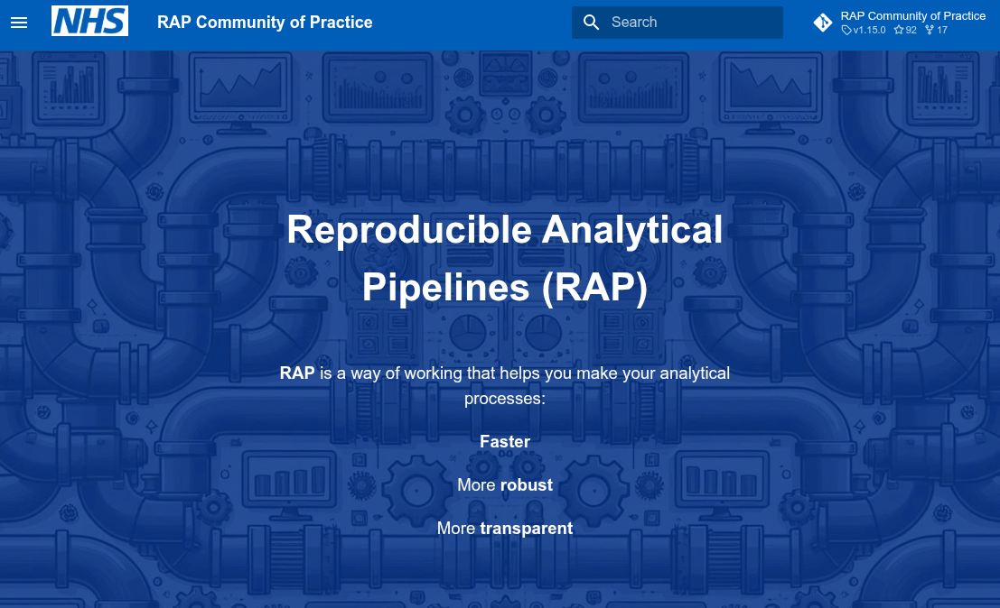
The NHS RAP Community of Practice, maintained by NHS England, supports analysts and teams in adopting reproducible analytical pipeline (RAP) methods.